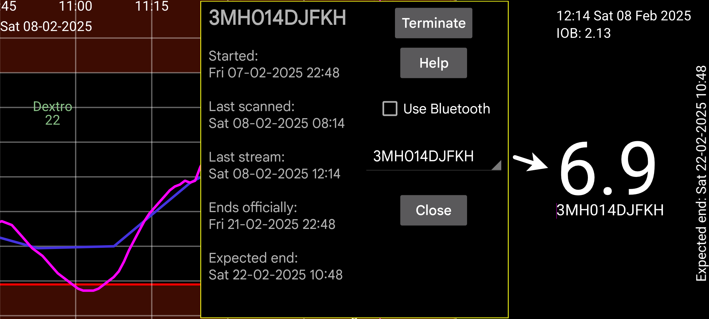

ar az de es fa hi it ja ko nl pl ru tr uk uz en
وقتی Juggluco مقدارهای پیوستهٔ حسگر را از طریق آینهسازی دریافت میکند، این صفحه اطلاعات حسگرها را نشان میدهد: (Juggluco)
«شروع»: زمان آغاز استفاده از حسگر؛ برای حسگرهای Libre، یک ساعت پیش از نخستین مقدار گلوکز.
«آخرین اسکن»: آخرین زمانی که حسگر اسکن شد؛ حتی اگر بهعلت خطای حسگر یا پیام تعویض حسگر دادهای دریافت نشده باشد.
«آخرین دریافت پیوسته»: زمان آخرین اندازهگیری گلوکز دریافتی از بلوتوث.
«پایان رسمی»: زمانی که تولیدکننده پایان عمر حسگر را اعلام کرده است.
«پایان مورد انتظار»: عمر واقعی برخی حسگرها از زمان رسمی بیشتر است؛ برای Libre 1 و 2 و Dexcom G7/ONE+ حدود ۱۲ ساعت و برای Sibionics نزدیک به ۱۰ روز بیشتر. فقط Libre 3 پس از پایان رسمی قابل استفاده نمیماند.
«پنهانکردن»: نمودار این حسگر را مخفی میکند. برای بازگرداندن آن، علامت گزینه را بردارید یا «نمایش» را در پایین سمت راست صفحه بزنید.
«پایاندادن»: دریافت گلوکز از این حسگر با بلوتوث را متوقف میکند. برای استفادهٔ دوباره باید حسگر را مجدداً اسکن کنید.
«استفاده از بلوتوث»: این دستگاه مستقیماً با بلوتوث به حسگرها وصل میشود. برای انتقال اتصال مستقیم به دستگاه دیگر، این گزینه را در دستگاه قبلی خاموش کنید. جهت ارسال «دادههای پیوسته» را هم در تنظیمات «آینهسازی» هر دو دستگاه برعکس کنید. اگر طرف دیگر ساعت Wear OS است، از دکمهٔ «منوی چپ ← ساعت ← تنظیمات Wear OS ← اتصال مستقیم حسگر به ساعت» استفاده کنید. (Use Bluetooth) (Left menu→Watch→WearOS config)
اگر چند حسگر فعال باشند، میتوانید حسگری را که اطلاعاتش را میخواهید انتخاب کنید.
«واسنجیها»: اگر برچسب قند خون را در «تنظیمات ← واسنجی» تعیین کرده و اندازهگیریهای غیرمستثنا را با «مقدار جدید» وارد کرده باشید، میتوانید فهرست واسنجیها را ببینید. اطلاعات بیشتر.
«زمان آمادهشدن»: برای حسگرهای Sibionics و Linx/Lumiflex/Aidex X میتوانید طول این دوره را به دقیقه تعیین کنید. دادههای آن دوره در نمودار، آمار، خروجی فایل و وبسرور نادیده گرفته میشوند؛ حتی برای دادههای گذشته.